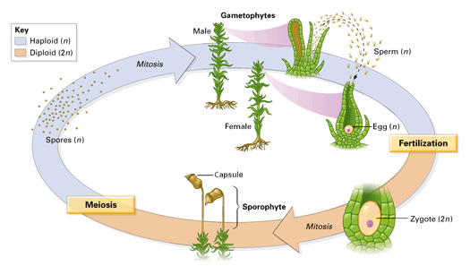

Objectives
- Contrast the two generations of a bryophyte.
- Describe three groups of bryophytes.
Key Term
Next time you are outside, look for damp habitats where mosses and other bryophytes might thrive. Bryophytes lack rigid support tissues, and therefore grow very close to the ground.
Bryophyte Adaptations
Bryophytes—mosses and their relatives—are sometimes described as nonvascular plants because they lack the lignin-hardened vascular tissue found in vascular plants. However, some bryophytes do have vascular cells that transport water. Male and female gametes are usually produced in reproductive structures in separate locations on the tips of the gametophytes (Figure 19-7). Sperm are flagellated and swim through a moist film to the eggs. After fertilization, the zygote grows from the tip of the female gametophyte into a sporophyte, a stalklike structure with a capsule at the top. This capsule produces and releases spores that grow into new gametophytes. The gametophyte is the dominant generation.
|  |
Figure 19-7
In the life cycle of a moss or other bryophyte, the sporophyte remains attached to the gametophyte. The gametophyte provides water and nutrients to the sporophyte. |
The Diversity of Bryophytes
Mosses may be the only bryophytes you are familiar with by name. Below, you can read about some of the characteristics of mosses and two of their bryophyte relatives: the liverworts and hornworts.
Hornworts Hornworts are bryophytes named for their hornlike sporophytes, which grow from their parental gametophytes.
Mosses A mat of moss actually consists of many gametophyte plants growing in a tight pack, holding one another up. The stalks are the sporophytes. The mat has a spongy quality that enables it to absorb and retain water. The flagellated moss sperm swim to the eggs through a film of water on the surface of the mat.
Liverworts Liverworts are bryophytes named for the liver-shaped appearance of the gametophyte.
Among plants, mosses and other bryophytes are unique in having the gametophyte as the dominant generation—the larger, more obvious form. As you continue your survey of plants, you'll see an increasing dominance of the sporophyte as the more highly developed (and more visible) generation.
Concept Check 19.2
1. Describe each generation of a bryophyte. Which generation is dominant?
2. Name three groups of bryophytes.
3. How do bryophyte sperm travel?